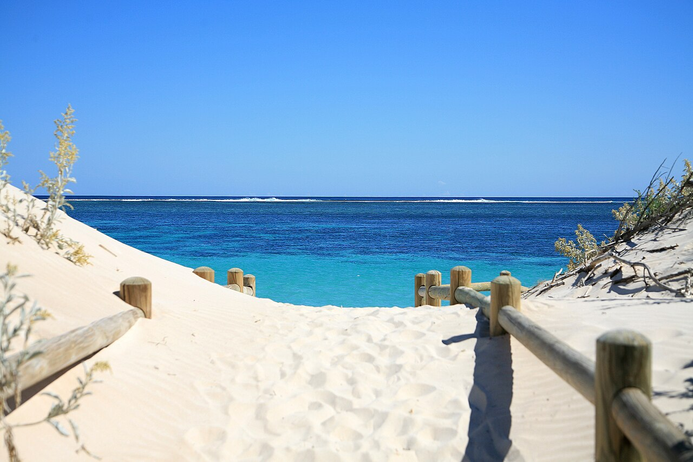

Ningaloo Reef
Australie · snorkeling, plongée, baignade, kayak

Un récif frangeant de plus de 250 km, accessible depuis la plage : on entre à pied dans le lagon et le corail commence à quelques brasses. Requins-baleines de mars à juillet.
- Lieu
- Australie
- Niveau
- Débutant
- Activités
- snorkeling, plongée, baignade, kayak
- Type d'eau
- Mer / océan
- Coordonnées
- -22.70, 113.67 (position approximative du secteur)
Dangers à connaître
- Courant sortant dans les passes du récif.
- Site classé : ne pose jamais le pied sur le corail.
- Soleil extrême, aucune ombre.
Le conseil d'Ocean Buddy
Entre par les chenaux de sable : marcher sur le platier tue le corail et t'entaille les pieds.
Ouvrir dans Ocean Buddy Télécharger sur l'App Store
Source : Description historique Ocean Buddy · vérification externe en attente.